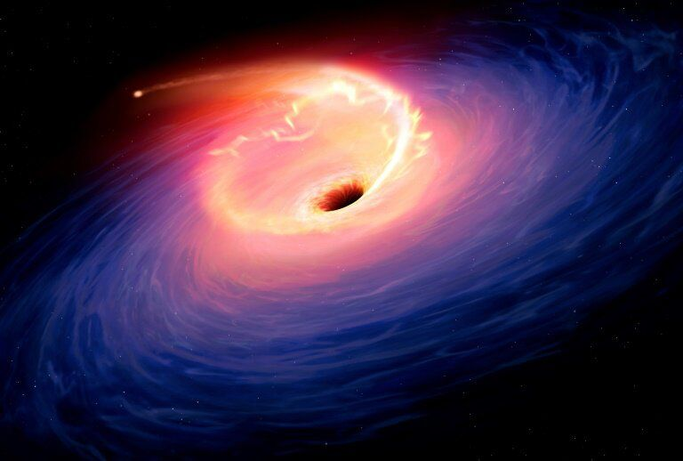
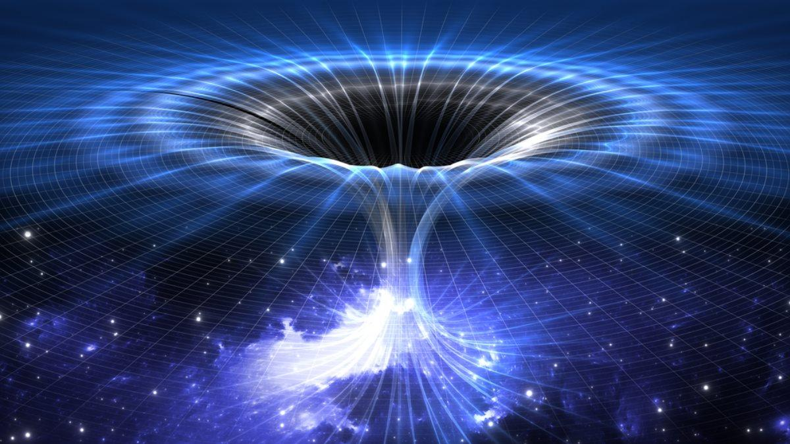

экзопланете крайне маловероятно
к Международной космической станции
Немного про чёрные дыры
Черная дыра – удивительное явление, встречающееся во Вселенной. Оно представляет большой интерес для ученых, однако в процессе его изучения они сталкиваются со многими трудностями. Тем не менее, современные технологии позволяют не только построить теории об устройстве черных дыр, но и проверить их на практике. Более того, в 2019-ом году ученым даже удалось сделать первую в мире фотографию, на которой изображен данный космический объект.
Что такое черная дыра?
- Чёрная дыра -
- область пространства-времени, гравитационное притяжение которой настолько велико, что покинуть её не могут даже объекты, движущиеся со скоростью света, в том числе кванты самого света
- два реалистичных:
- гравитационный коллапс (сжатие) достаточно массивной звезды;
- коллапс центральной части галактики или протогалактического газа;
- два гипотетических:
- формирование чёрных дыр сразу после Большого Взрыва (первичные чёрные дыры);
- возникновение в ядерных реакциях высоких энергий.

Смерть от чёрной дыры
Считается, что черные дыры образуются при гибели массивной звезды. После того, как ядерное топливо звезды исчерпано, ее ядро схлопывается до самого плотного состояния материи, которое только можно вообразить — в сто раз более плотного, чем атомное ядро.
Оно настолько плотное, что протоны, нейтроны и электроны больше не являются дискретными частицами. Поскольку черные дыры темные, их обнаруживают, когда они вращаются вокруг нормальной звезды. Ее свойства позволяют астрономам делать
выводы о свойствах ее компаньона, черной дыры.Первой подтвержденной черной дырой стал Cygnus X-1 — самый яркий источник рентгеновского излучения в созвездии Cygnus. С тех пор было найдено около 50 черных дыр в системах, где обычная
звезда вращается вокруг черной дыры. Это ближайшие примеры из предполагаемых 10 миллионов, рассеяных по Млечному Пути. Черные дыры — могилы материи. Ничто не может избежать их, даже свет. Судьбой тех, кто упадет в черную дыру станет
спагеттификация, идею которой популяризировал Стивен Хокинг в книге «Краткая история времени». При спагеттификации гравитация черной дыры разорвала бы вас на части, разделив кости, мышцы, сухожилия и даже молекулы. Как поэт Данте
описал слова над вратами ада в «Божественной комедии»: Оставь надежду, всяк сюда входящий
.